A full end-to-end system, designed and integrated from separate development modules — GPS, LoRa radios, microcontrollers, a Raspberry Pi backend and a browser dashboard — all engineered to survive a day of youth dinghy racing.
Each boat carries a LoRa GPS tracker. A support-boat gateway collects every position over the mesh and hands it to a Raspberry Pi, which logs it to a database and serves the live dashboard.
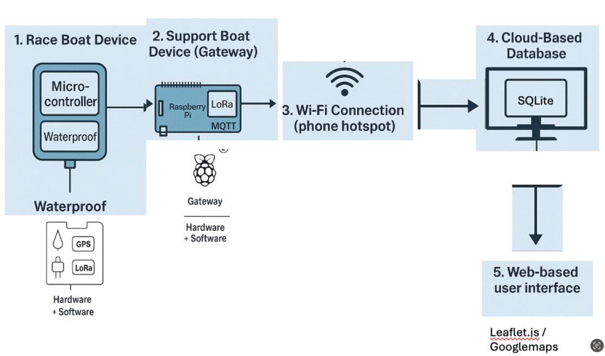
Unlike pre-packaged commercial trackers, every module here was selected, wired and tested by hand — learning to troubleshoot firmware, wiring and signal issues systematically.
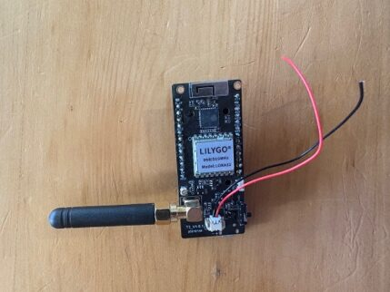
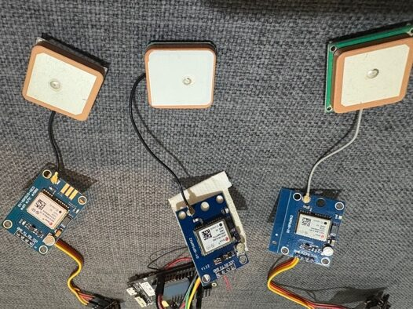
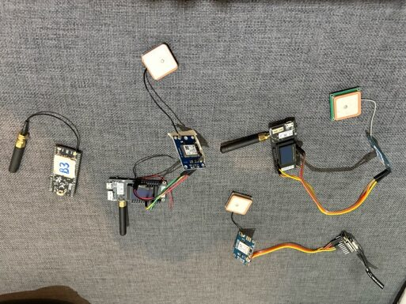
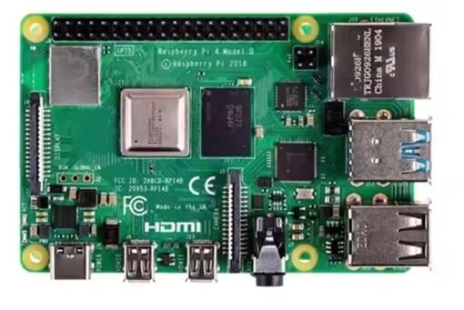
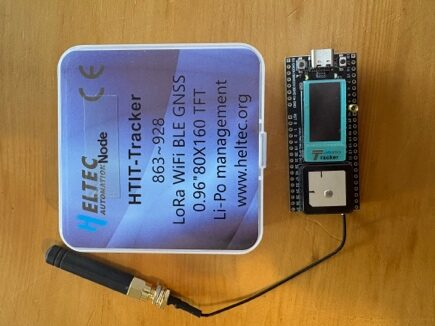
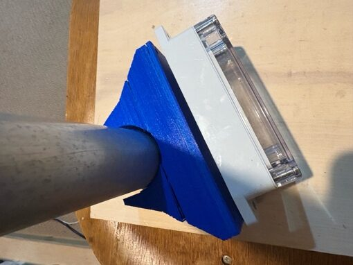
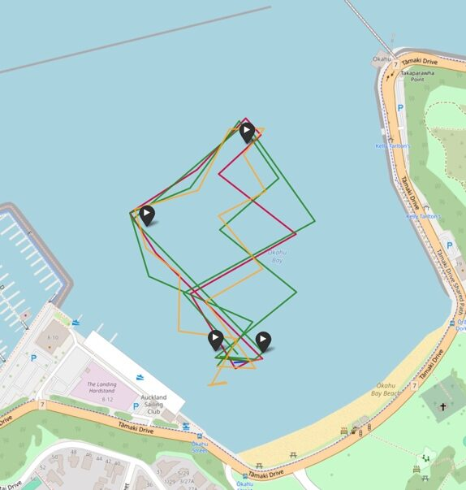
Getting many boats' data onto one map, with trails, data points and a time function, took many iterations of debugging the HTML and back-end data flow.
Bench tests on land, waterproofing trials in the pool, then real sail-training sessions with Royal Akarana Yacht Club — the system ran with no physical or software failures.
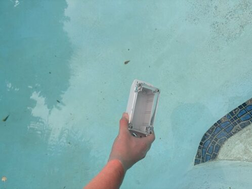
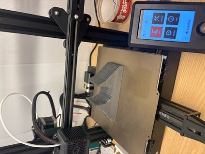
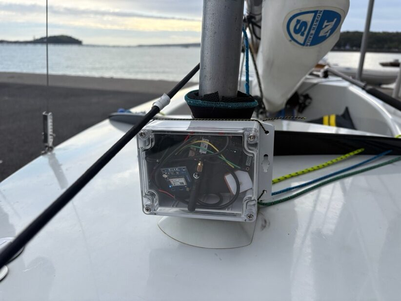
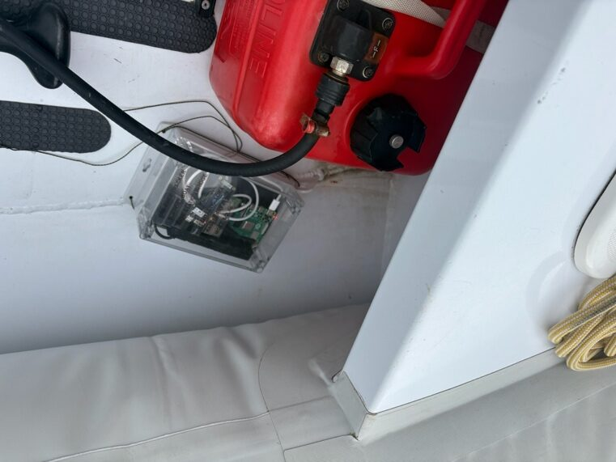
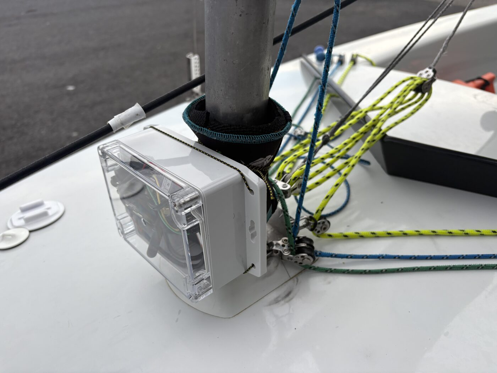
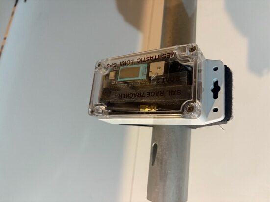
The prototype proved a low-cost, real-time, subscription-free tracker is possible. The main limitation was Meshtastic firmware throttling how much GPS data could flow. The roadmap:
Replace Meshtastic with an Arduino-based stack and custom Python to unlock continuous, time-stamped GPS data.
Move from development boards to a purpose-built PCB — cheaper, smaller and more reliable.
Race setup, sailor/device pairing, training modes and a multi-race regatta dashboard with capsize alerts.
Add a start-timer display and motion sensors to detect capsizes and measure heel angle & tacking efficiency.
See how this student project won the Samsung Solve for Tomorrow national award and made it onto RNZ.
Read the story & press